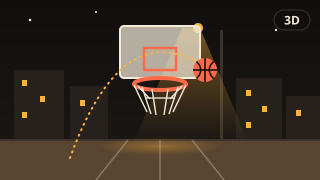

Kule Kat
İstanbul'un gece silüeti
Dokun ve başla. Kayan katı kulenin tam üstüne bırak.
Duraklatıldı
Nasıl oynanır?
İstanbul'un gece silüetinde bir kule yapıyorsun. Ekranda sağa sola kayan katı, kulenin tam üstüne gelince ekrana dokunarak (bilgisayarda boşluk tuşuyla) bırak. Kat kulenin üstüne oturur; taşan kısım kesilip aşağı düşer ve sonraki kat daralır. Tam hizaya "mükemmel" bırakırsan kat olduğu gibi kalır; art arda üç mükemmel atışın ardından kule yeniden genişlemeye başlar. Kat hiç örtüşmezse kule biter. Her on katta kulenin arkasındaki yapı Galata Kulesi'nden Kız Kulesi'ne, oradan Süleymaniye'ye döner ve gökyüzü biraz daha kararır; kat yükseldikçe hız yumuşakça artar. İki mod var: Normal ve herkese aynı başlangıcı veren Günlük. En iyi sonucun yalnızca bu cihazda saklanır; oyun internetsiz de oynanır, sekme arka plana geçince kendiliğinden duraklar. Yavaş cihazlarda üstteki "Düşük grafik" düğmesi pencere ışıklarını ve ek katmanları kapatıp akıcılığı korur.
Benzer oyunlar
-
 Bulmaca
BulmacaZekâ Küpü
Parmağınla döndürülen 3D zekâ küpü. 2×2, 3×3 ve 4×4 boyutları, günlük karıştırma, kronometre ve adım adım Türkçe çözüm rehberi.
-

SporSmaç
Gece mahalle sahasında 3D basketbol: parmağını yukarı kaydır, topu potaya at. Seri çarpanı, kayan pota, 60 saniyelik tur, Sonsuz ve günlük pota dizisi.
-
 Aksiyon
AksiyonYokuş Aşağı
Gece İstanbul yokuşlarında sodyum ışıklı 3D pistte yuvarlanan top. Sağa sola yönlendir, kor bloklardan kaç, rampalardan uç; günlük pist ve sonsuz mod.